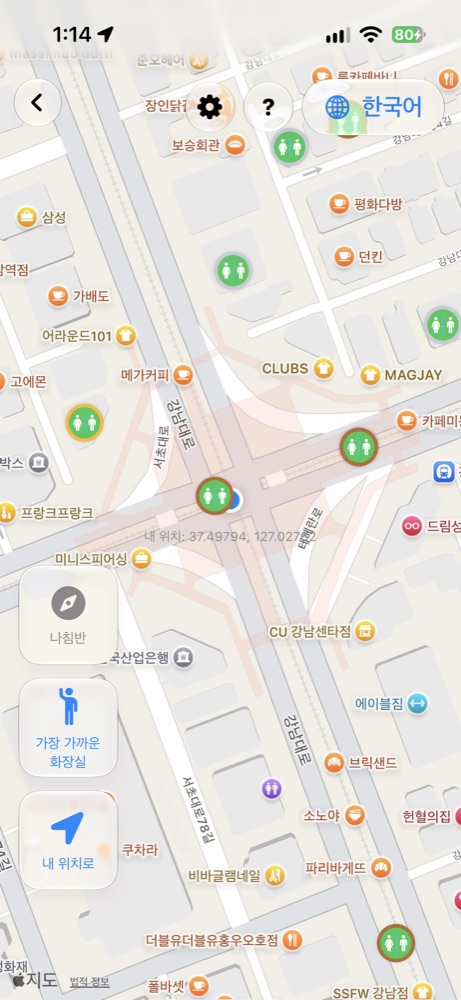
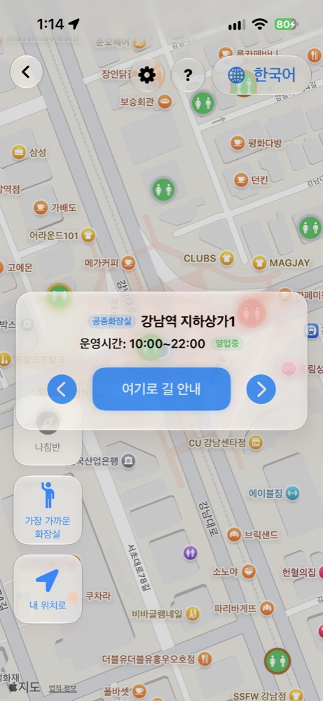
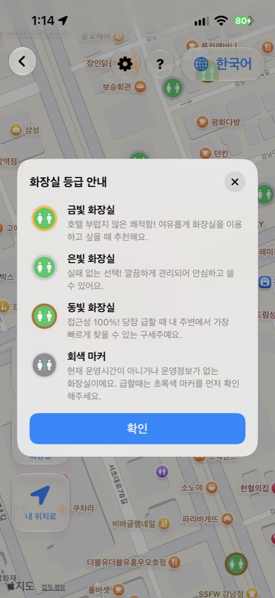
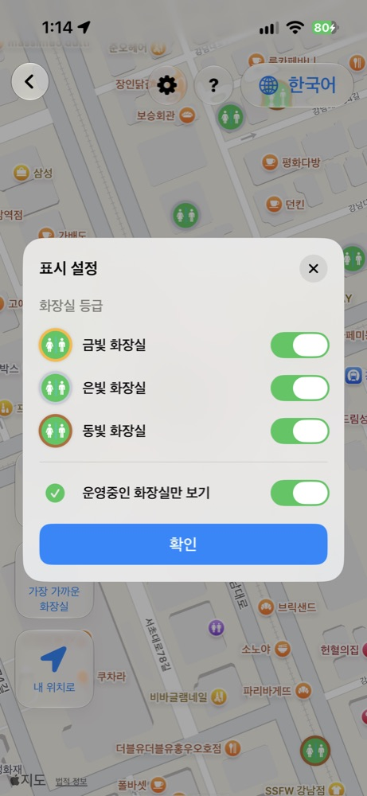
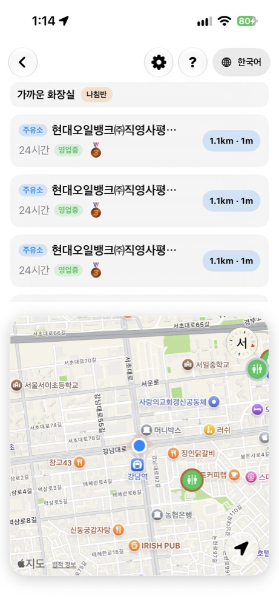
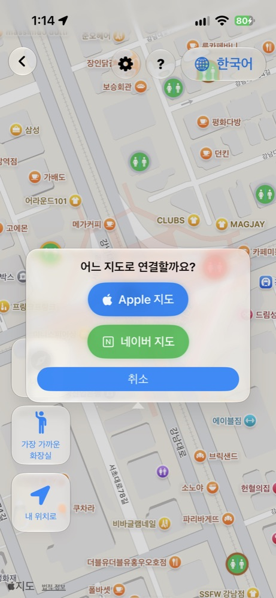

مجاني لـ iPhone و iPad
خريطة دورات المياه في كوريا
عندما تحتاجها، أقرب دورة مياه.
أكثر من 80,000 دورة مياه عامة ومفتوحة في كوريا الجنوبية على خريطة واحدة. اختر المفتوح منها الآن وانطلق مباشرة بالاتجاهات، سيرًا أو بالسيارة.
وضع المشي
كل دورات المياه القريبة
بنظرة واحدة.
افتح الخريطة لتظهر دورات المياه العامة القريبة كدبابيس. في المناطق المزدحمة تُجمع لتبقى الخريطة واضحة، وتتفرق عند التكبير. أدر هاتفك فتدور الخريطة معك.

مفتوح الآن
لا مزيد من
الأبواب المغلقة.
يقرأ التطبيق مواعيد كل دورة مياه — 24 ساعة أو نهارًا أو ليلًا — ويعرض المفتوح منها الآن. بلمسة على «أقرب دورة مياه» يبحث في كل كوريا عن أقرب واحدة مفتوحة.

الفئات
احتياجات مختلفة،
خيارات مختلفة.
الذهبية لراحة بمستوى الفنادق، والفضية لخيار نظيف وموثوق، والبرونزية لأسرع خيار عندما لا تستطيع الانتظار. المغلقة أو بلا معلومات تظهر باللون الرمادي.

الفلاتر
اعرض فقط
ما تريد رؤيته.
فعّل أو أوقف الفئات الذهبية والفضية والبرونزية، وفعّل «المفتوحة فقط» لإخفاء كل ما هو مغلق.

وضع القيادة
أثناء القيادة،
فقط ما هو أمامك.
باستخدام اتجاه GPS يتجاهل التطبيق ما خلفك ويبحث عن دورات المياه أمامك، مرتبة حسب مسافة الطريق الفعلية، حتى خمس نتائج.

الاتجاهات
اختر،
ثم انطلق.
اختر دورة مياه لتبدأ الاتجاهات سيرًا أو بالسيارة فورًا في Apple Maps أو Naver Map.

ست لغات
لكل من
يزور كوريا.
الكورية والإنجليزية واليابانية والصينية المبسطة والتقليدية والعربية. تُترجم أسماء دورات المياه وعناوينها على جهازك، فلا تحتاج إلى قراءة الكورية.
الخصوصية
موقعك
يبقى على هاتفك.
بيانات دورات المياه مضمنة في التطبيق، فيتم كل بحث على جهازك. لا يُرسل موقعك إلى أي خادم ولا حاجة لإنشاء حساب.
Android
نسخة Android
في الطريق.
نعمل على نسخة لهواتف Galaxy وغيرها من أجهزة Android، وستكون هذه الصفحة أول مكان نعلن فيه عنها.
نسخة Android قريبًاالأسئلة الشائعة
هل التطبيق مجاني؟
نعم، التطبيق مجاني على App Store وبلا إعلانات.
هل توجد نسخة Android؟
ليس بعد. التطبيق متاح الآن لـ iPhone و iPad، ونسخة Android قريبًا.
هل يعمل دون إنترنت؟
البيانات مضمنة في التطبيق فيتم البحث على جهازك. تحتاج الخريطة والاتجاهات إلى الإنترنت.
هل يُرسل موقعي إلى أي مكان؟
لا. يُستخدم موقعك على جهازك فقط.